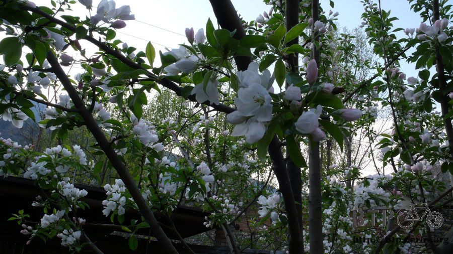
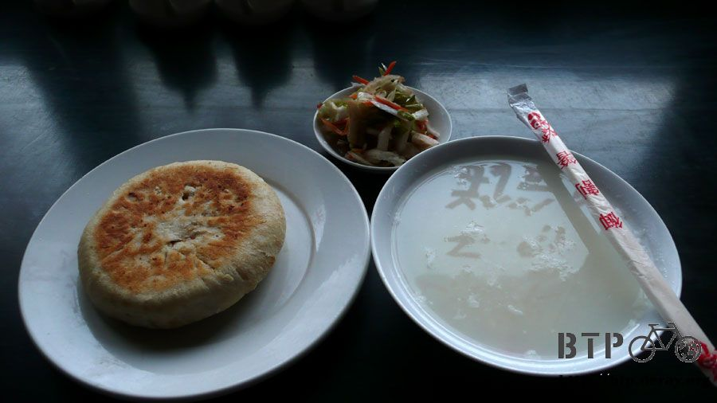
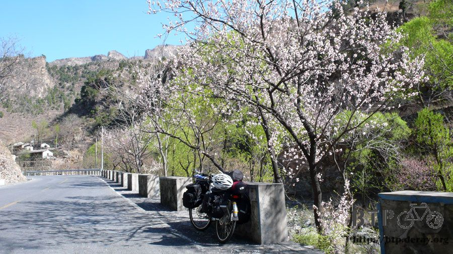
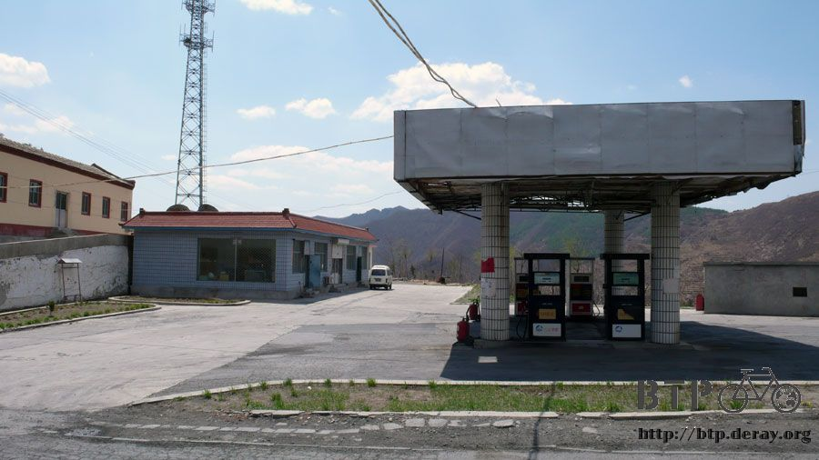
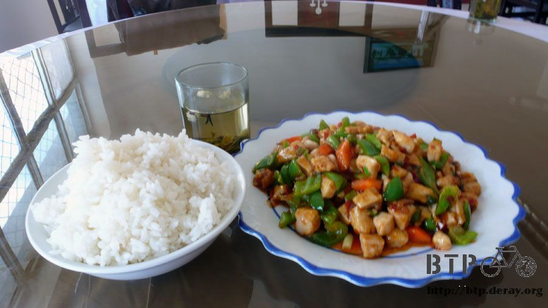
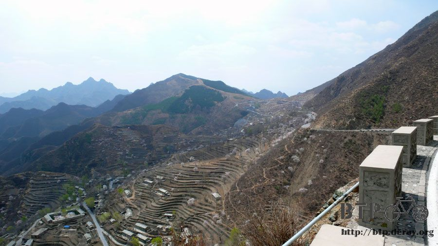
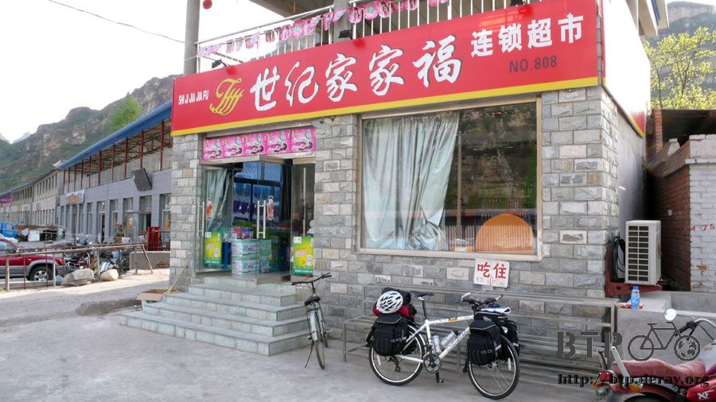
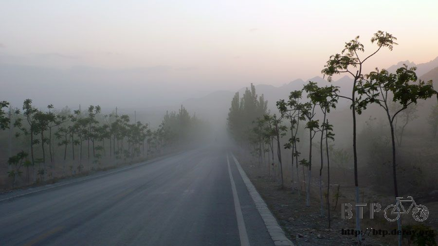
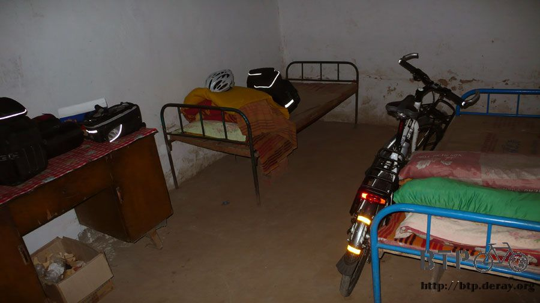
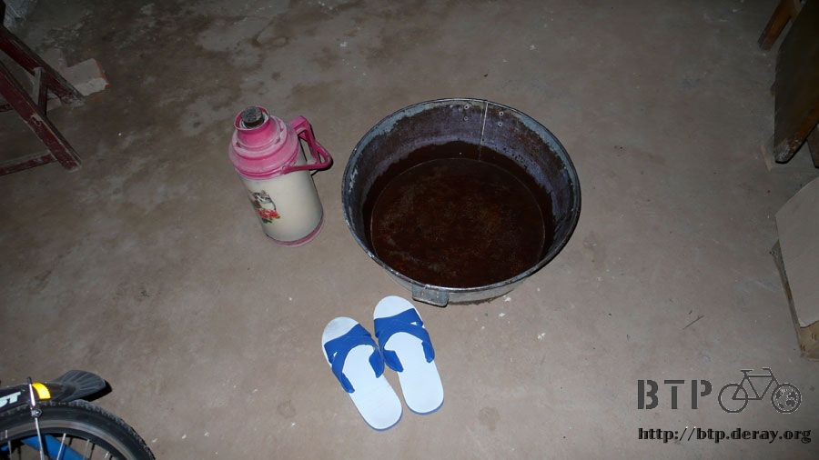

迷失桃花源
一整個晚上都很好睡，沒有嗡嗡嗡的蚊子來作伴，但是一大清早的四點多我就醒來了，
因為外面養的雞，每一隻都咕咕～咕！的叫個不停。
惺忪的睜開雙眼，外頭的窗戶的確開始泛亮光，但看看手錶都還沒四點半耶，我不想這麼早起呀 ~_~
可是咕咕雞鬧鐘又按不掉，就這麼和他們抵抗到五點半多，我終於滿意的起床了(伸懶腰)。
昨天睡前，大娘給了我一大壺的保溫瓶，裡頭當然就是熱開水。
清晨的山裡好冷，嘴巴呼出來都是白白的蒸氣。
用熱開水回沖著昨天趙叔裝在水壺裡的茶葉，喝點熱茶暖和身子。
然後穿著短褲短袖和拖鞋，跑去外面尿尿。
在露天茅房的旁邊就是豬圈，有一隻大黑豬還在打鼾睡覺沒醒來。
雖然我今天被雞叫了一個多小時才起床，但是怎麼懶惰也比這隻大黑豬要勤勞，
突然覺得很得意(雖然是跟一隻豬比)，照一張相片以茲證明，我比豬勤勞。

他們自家的院子裡，種了一棵樹，上面開滿了好漂亮的花。

幫大娘把房間恢復成原狀，整理行李的時候，拿出了闖關成功的防身道具－CS催淚瓦斯。
拿在手上，練習現在有人正在向我搶東西。
『把值錢的東西都留下來！』恐嚇的凶神惡煞貌。
『我嚇的動不了，你要什麼自個過來拿吧。』裝做俗仔的我。
然後趁壞人走近的時候，將藏在手裡的CS瓦斯，朝壞人的臉給他噴下去。
我還演得很逼真，在房間的角落裡頭，輕輕的噴了一點瓦斯出來。
想說噴一點應該沒那麼毒吧，結果接下來整理行李的十多分鐘，我連續打了三十幾個噴嚏。
將行李掛回小多身上之前，先檢查小多貨架的螺絲有沒有鬆脫，然後將前後輪的胎壓都打滿。
掛完行李，就推著單車爬上斜坡。走回上邊的餐廳去準備吃早餐。
好運來飯庄的大娘，名字叫做『李華』，我說吃什麼都行，
那她就給我拿了燒餅還有大米粥配一碟鹹菜。
燒餅還蠻好吃的，大米粥其實就是一般的稀飯，那一小疊鹹菜，實在是鹹到翻過去，

『李大娘～這鹹菜也太鹹了吧？』
『真的嗎？因為前兩天醃的薄了，所以我又加了把鹽。』
吃一小口鹹菜，我要配上兩大口的大米粥，或是啃一大口的燒餅來平衡一下味覺。
燒餅跟大米粥沒兩下就吃完了，但是鹹菜還剩下大半疊可怎麼也吃不下去>"<
雖然吃點鹹的東西。補充體內流失的鹽分是好事，但這整個也太鹹了吧(死)
這樣的早餐是1.5塊錢。
出發前，幫李大娘照張相留念一下，
雖然是因為我自己笨騎錯路才跑到這裡來，可是能認識這麼棒的餐廳和旅館真是太幸運了。
雖然走錯路，但是堅持不走回途路的我，只好硬著頭皮繼續往下騎，
李大娘說再往前的話，就都是上坡路了，大概有5~60里路，而且騎這麼辛苦，還不見得能通到我想去的地方。
七點半，咬著牙出門了！
『慢慢騎，路上小心，有空再來山裡邊玩呀～』
昨天看GPS的軌跡，這才知道自己迷了很大的路，所以今天就想辦法下山，離開這個地方往都市走，
而下山之前，要先爬好長一段的上坡路。

七點多出發，連續騎了好久，一路上居然沒有汽車，整個很安靜，
但全部都是上坡的路段騎起來真的好累，而且還搭配著吹個不停的山谷逆風。
我的原則是，不管騎的再慢，只要碼表顯示的速度大於5公里的話，那就沒有必要下來用推的。
因為下來用推車的方式，速度就只有5公里，所以慢慢踩踏還是可以前進的。
這一路上看到很多美景，山谷中種滿了應該是櫻花的樹。

今天我有兩次的機會可以提早下山，但是我覺得這樣下去也很吃虧，所以就在山裡騎了更長的距離。
結果只是變成下山之後，要花更遠的距離騎回想去的地方而已。
和昨天那段路上產煤礦相比，今天這條路上產的則是大理石，被切成正方形的大小，然後堆在路邊或是裝箱。

一路上都在爬坡真的很吐血，而且路道兩旁的山勢都很陡峭，壯闊的叫我目瞪口呆，可也很怕會有落石掉下來。
早上九點五十分，從一大早就騎上坡，終於開始覺得有點沒力。
翻了翻包包，拿出飛機上拿的奶油，就這麼吃了起來，吃完之後還是很餓，所以又把最後一包的餅乾存糧給拆來吃了。
十點十分，到一個叫做『堂上村』的地方，有七八個大娘坐在門口聊天，
我問她們這前面有沒有地方可以吃飯呢？
答案是再往前面爬點上坡，會看到一間加油站，那裡有在賣吃的東西。
我又問可不可以拍張大娘們的照片呢？
結果大家都說自己很醜、沒有在拍照，然後通通都原地躲起來，只剩一個開朗的大娘讓我入鏡。

這一路上都種著粉紅色花瓣的樹，大風一吹，無數花瓣就隨著風的軌跡起舞，很令人震撼的畫面。
很像是不小心騎到桃花源的感覺。
向大娘們問的情報果然準確，再往上走個七、八公里就看到一間加油站，可是沒有人在那，

也沒有看到餐廳或是飯館的招牌，這邊真的可以吃東西嗎？
滿心疑惑的騎到裡邊去，店老闆開門問我是不是要吃飯
『先進來吧～』老闆說。
我問有什麼東西好吃的？結果給我一張菜單，從涼拌到火鍋都有，價錢從5塊到18塊不等。
看著看得懂的中文字菜單真是一件幸福的感覺，想了很久，後來決定點一份10塊的宮爆雞丁。
等菜上桌的這邊時間，就喝店裡沏給我的茶水(裡面還有花朵呢)
然後廚師端出了好大一盤的宮爆雞丁，還添了好大的一碗白飯給我。
真後悔剛剛嘴饞偷吃餅乾，結果現在肯定又吃不完了，唉～

一邊吃飯，店裡面聊天的人一邊問我要到哪去？
我就說想先往保定去，然後往西安的方向走。
但是這一路從下河騎到這邊都是上坡，實在夠折騰的了 /_\
店老闆說，再往上騎5公里的路，就是山頂了，然後就全部都是下坡。
終於聽到一個好消息，期待已久的下坡總算要現身了。
在我吃飯的時候，其它人就聊說，昨天看電視新聞，說有個人要騎自行車1.5萬公里呢。
心裡面就在想，那不就是在說我嗎 @@"
低調一點好，沒事別承認。
但是老闆好像特別眼尖，等我很努力的吃了九成，但再也吃不下了，準備要買單去享受下坡的時候，
夥計說，『老闆說不收錢，這頓飯他請』
這怎麼好意思白吃人家的飯呢，但老闆堅持不收那就算了，開心的賺到一份午餐。

十一點五十分，攻上山頂，捨棄一條看起來應該是下山的路，而繼續走G108國道，往『野三坡』騎。
這上坡很累，下坡則是很危險，除了速度不能太快，路況也不是很好，
常常柏油路會變成爛爛的石頭路，要是速度太快沒煞住就硬騎過去的話，輕則破胎，重則摔車都有可能。

下午三點左右到達野三坡，這邊還算是一個很熱鬧的地方。
因為隔壁的河流跟山勢實在太漂亮了，我好幾次都停下車來，仔細的欣賞個過癮之後才繼續騎車。
看告示牌，這個地方已經被登錄在世界地質國家公園當中了，
能夠因為迷路，有幸到這裡一趟，真是我的福氣。

這邊也很多人在畫風景畫，或是拍婚紗照片。

可是野三坡的觀光區，餐廳跟旅館林立的樣子，就讓我很不喜歡了。
反正今天也沒打算住在這，快速通過就是了。
不知道是我手上的這一本地圖有問題，還是中國的道路指示牌有問題。
我總是沒辦法將道路指示牌的地名和地圖上的對照在一起，
而地圖書上的地名，我也找不到告示牌說該往哪邊走可以到這裡。
反正已經迷路的這麼淒慘了，最笨最笨就是又騎回北京，不然也沒什麼好怕的。
下午四點四十，在一家雜貨店－『世紀家家福』，還是連鎖的？這是第808家，有沒有這麼厲害呀？
買了補給用的餅乾兩包(1包1.5塊)、還有一瓶橘子口味的運動飲料(4塊)
咕嚕咕嚕就把飲料給喝完，空瓶子則留著，可以當水壺。

傍晚的五點四十分，我還是不知道自己現在在地圖的什麼地方，
但是總算讓我看到一個指示牌的地名，是我的地圖書中也找的到的地方『易縣』
雖然告示牌說還有43公里，也就是今天如果要騎到那，那肯定已經晚上八點多了，
但起碼是一個正確的方向可以讓我騎乘，加足了馬力，往易縣前進，
五點多的時候。路上騎自行車的人又多了起來，看起來應該都是工廠下班，要騎車回家的工人，
牧羊的也把羊趕回家，整個就是很鄉村的感受。

騎著騎著，趕路中的我，居然路上還起了點霧，
這時我已經打算，只要可以住宿就好，拜託快點出現一間吧。我很不挑剔的。
在天快要黑的20分鐘之前，我在一個小鎮問大叔『這哪有住店的地方呀？』
昏暗的陽光已經讓我看不清楚，我背後的牌子就寫了旅店兩個字。
那大叔指了指我背後，說就是這了，然後幫我找老闆過來，
老闆笑咪咪的說跟我走吧，我就邊走邊問這邊住一晚上多少錢呀？
結果也是10塊錢就可以搞定的房價。

房間看起來有點不太衛生，看在房價便宜的份上。就不計較太多了，
卸下小多身上的重擔，然後準備要去吃飯，這才發現門口的鎖是壞的，
我趕緊去找老闆說這門關不起來，我的東西跟自行車都在裡頭，會不會給掉了？
老闆說『放心，在我這地方，什麼事情都不會發生。』
我真的相信這個老闆有什麼神奇的魔力可以讓東西不會不見，然後開心的去門口吃飯。
晚餐點了一份炒餅(3塊)、紅油耳絲(8塊)還有一瓶雪花啤酒(3塊)
不論是什麼東西都是一大盤、一大盤的來。
炒餅吃起來很像是炒麵，就是把餅切成一條一條的，然後跟高麗菜絲和著醬油炒，所以當然很鹹。
紅油耳絲，是涼拌菜，我沒看到紅油，但是這道菜真的很好吃，酸酸鹹鹹的，全部都被我配著啤酒給吃到肚子裡去了。

回到房間，看到這不衛生的房間，晚上肯定會有很多的蒼蠅跟蚊子，這床跟棉被肯定也乾淨不到哪裡去。
先跑去找老闆，說能不能洗個澡？
老闆說沒問題，有熱水，就領著我去拿一個大盆，然後舀點冷水進去，接著給我一個熱水壺，
要我自己混在一起，這樣就是洗澡水了，
我拿著大盆回房間，把滾燙的開水加到盆裡，就變成冒熱煙的洗澡水，拿出毛巾，把臉跟身體都擦乾淨。
還有頭也洗一洗，一樣是擦澡，前兩天都是用冷水，今天用熱水擦，就覺得好舒坦。
剩下的水，就拿來把頭巾和穿了兩天的襪子也洗乾淨。

因為房間感覺有點恐怖，所以我拿出了睡袋，先將棉被還有床單鋪好，然後再放睡袋，睡在睡袋裡面，
這樣雖然有點累贅，因為明天早上還得收睡袋，可是總比我背著這麼大又重的東西，可是連用都沒用過來的好吧？
這樣起碼明天我繼續載著這些東西騎車的時候，我不會覺得這東西是多餘的，而是真的派的上用場。
睡前，房裡點著昏暗的小燈，一大堆的大頭蒼蠅跟蚊子一直去撞那個小燈，
我心裡想說今天晚上應該會被這些蟲騷擾的很難入眠了，
整個人窩在睡袋裡，然後拿外套把露出來的頭給蓋著，
晚上睡一睡，外套不知不覺就掉了，但是居然也沒有小蟲來攻擊我。也算是一個平安又香甜的一夜。
明天，應該可以騎到保定，原本計畫從北京騎兩天到的地方，看來得花三天才到的了。
其實我很不想往大城市移動，物價貴，房價貴，道路也很複雜，要是可以天天都是像這樣在小地方過夜那就好了。
明天我也要睡到五點半起床，因為那時候天空就已經好亮好亮了，早點出發比較輕鬆。
繼續閱讀：4.25 清水，洗滌一身的髒汙
中國-人民幣－ 1：4.3 台幣
4.24 |
總計：32.5元 |
李大娘的早餐1.5元、便利商店餅乾3元、橘子口味運動飲料4元、炒餅3元、紅油耳絲8元、雪花啤酒3元、住店10元 |
|